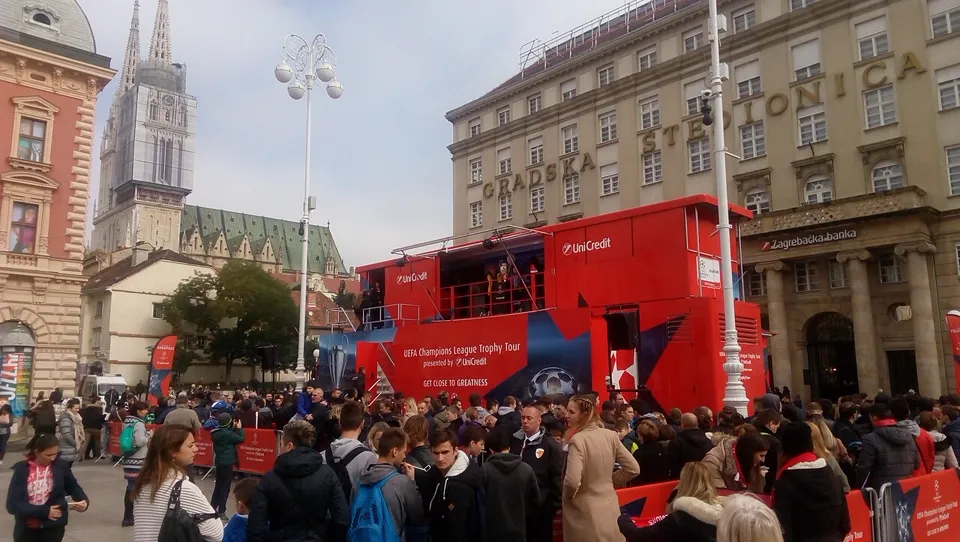

Máximos goleadores
- Cristiano Ronaldo — 140 goles
- Lionel Messi — 129 goles
Los dos jugaron la competición durante casi dos décadas y ya no la disputan.
Ir a: por clubes — por países — récords
Desde 1956 se han disputado 71 ediciones. Estos son los clubes con más de un título:
| Club | País | Títulos | Último título |
|---|---|---|---|
| Real Madrid | España | 15 | 2024 |
| AC Milan | Italia | 7 | 2007 |
| Bayern de Múnich | Alemania | 6 | 2020 |
| Liverpool | Inglaterra | 6 | 2019 |
| FC Barcelona | España | 5 | 2015 |
| Ajax | Países Bajos | 4 | 1995 |
| Inter de Milán | Italia | 3 | 2010 |
| Manchester United | Inglaterra | 3 | 2008 |
| Paris Saint-Germain | Francia | 2 | 2026 |
| Juventus | Italia | 2 | 1996 |
| Benfica | Portugal | 2 | 1962 |
| Chelsea | Inglaterra | 2 | 2021 |
| Nottingham Forest | Inglaterra | 2 | 1980 |
| Oporto | Portugal | 2 | 2004 |
Con un título están: Celtic, Hamburgo, Steaua de Bucarest, Olympique de Marsella, Borussia Dortmund, Feyenoord, Aston Villa, PSV Eindhoven, Estrella Roja y Manchester City.
| País | Títulos | Clubes campeones |
|---|---|---|
| España | 20 | Real Madrid y FC Barcelona |
| Inglaterra | 15 | Liverpool, Manchester United, Chelsea, Nottingham Forest, Aston Villa y Manchester City |
| Italia | 12 | Milan, Inter y Juventus |
| Alemania | 8 | Bayern, Hamburgo y Borussia Dortmund |
| Países Bajos | 6 | Ajax, Feyenoord y PSV |
| Portugal | 4 | Benfica y Oporto |
| Francia | 3 | Olympique de Marsella y Paris Saint-Germain |
| Escocia | 1 | Celtic |
| Rumanía | 1 | Steaua de Bucarest |
| Serbia | 1 | Estrella Roja |
Los dos jugaron la competición durante casi dos décadas y ya no la disputan.
Paco Gento ganó 6 Copas de Europa con el Real Madrid entre 1956 y 1966. En 2024 lo igualaron Dani Carvajal, Luka Modrić, Toni Kroos y Nacho Fernández.
El Real Madrid ganó las cinco primeras ediciones seguidas (1956 - 1960). Nadie ha vuelto a hacerlo.
Antes de cada final, la Orejona sale de gira por varias ciudades europeas para que los aficionados puedan verla de cerca, como en esta parada de Zagreb en 2016.

Foto de Branko Radovanović en Wikimedia Commons, licencia CC BY-SA 4.0.